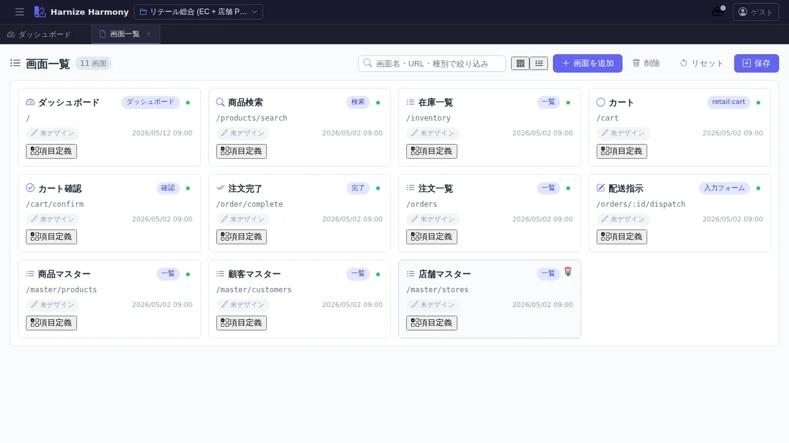
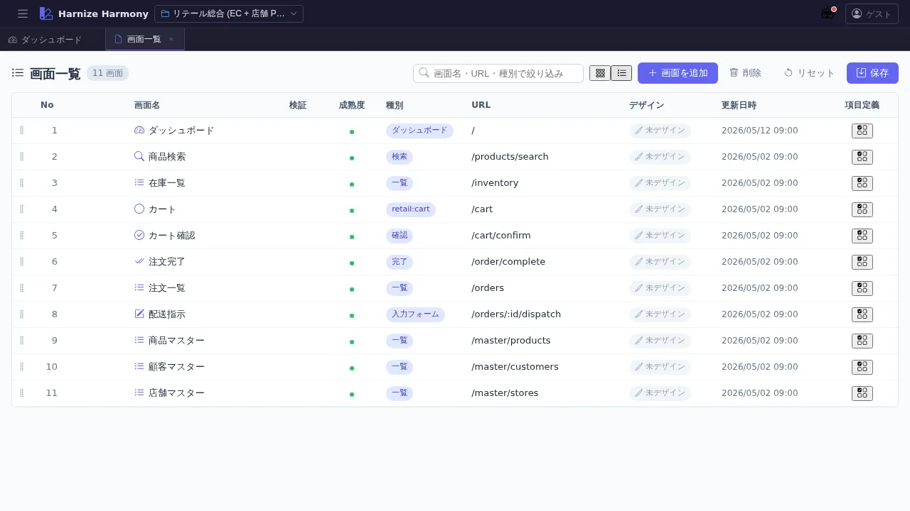

画面一覧
対象画面:
ScreenListView(frontend/src/components/flow/ScreenListView.tsx) ルート:/w/:wsId/screen/list種別: シングルトンタブ
概要
プロジェクトの全画面 (Screen リソース) を一覧する。カード / 表の 2 表示モード切替、フィルタ、ソート、複数選択、コピー / 切り取り / 貼り付け、ID 変更 (rename refactor)、ドラフト中マークの可視化など、一覧 UI 共通仕様 (list-common) を全部備える代表的な画面。
purpose='gadget' の画面は本一覧では非表示 (ガジェット一覧 /gadget/list で管理、#1025)。
到達経路
- HeaderMenu → 「画面」→「画面一覧」
- ダッシュボード「機能別定義数」パネル → 「画面」リンク
- 直接 URL:
/w/<wsId>/screen/list
画面構成


主要エリア
- ヘッダー — タイトル「画面一覧」+ 「新規作成」ボタン
- フィルタバー (
FilterBar) — キーワード検索 (画面名 / URL / 説明) - ソートバー (
SortBar) — 画面名 / 種別 / URL / 更新日時 で昇降順 - 表示モード切替 (
ViewModeToggle) — カード ⇔ 表 - 一覧本体 (
DataList)- カードビュー — グリッド上に画面アイコン + 名前 + 種別 + バッジ群
- 表ビュー — 列: draft●(未保存マーク) / 画面名 / 検証(error/warning 件数) / 成熟度 / 種別 / URL / 更新日時
主要操作
| 操作 | 手段 | 結果 |
|---|---|---|
| 新規作成 | 右上「新規作成」 or 右クリック → 「新規作成」 | ScreenEditModal が開き、名前 / 種別 / URL / pageLayoutId / editorKind / cssFramework を入力 |
| 画面を開く | カード / 行をクリック | 画面デザイナー (/screen/design/:id) が新タブで開く |
| 画面項目編集を開く | カード上の「画面項目」アイコン or 表内のアイコン | /screen/items/:id が新タブで開く |
| 編集 (メタ情報) | 右クリック → 「編集」 or F2 | ScreenEditModal (既存値で開く) |
| 削除 | 右クリック → 「削除」 or Delete キー | デザインデータと edges も削除、確認ダイアログあり |
| 複数選択 | Ctrl+Click / Shift+Click | カード / 行に選択枠 |
| コピー / 切り取り / 貼り付け | Ctrl+C / Ctrl+X / Ctrl+V | 別 workspace へも貼り付け可 |
| 複製 | 右クリック → 「複製」 or Ctrl+D | 同名末尾に番号付きで複製 |
| ID 変更 (rename refactor) | 右クリック → 「ID 変更…」 | RenameEntityDialog で kebab-case 新 id を入力、全 ref 自動更新 + undo toast |
| 並び替え | カード / 行をドラッグ | renumber() で No 列再採番、save 必要 |
| ソート | ソートバー or 表のヘッダクリック | 表示順のみ変わる (永続化されない) |
| フィルタ | キーワード入力 | 部分一致で絞込み |
| カード ⇔ 表切替 | 右上の切替ボタン | localStorage (list-view-mode:screen-list) に永続化 |
| 保存 | Ctrl+S or 「保存」ボタン (編集中のみ表示) | commitScreens でサーバ反映 |
| 編集破棄 | 「破棄」ボタン (編集中のみ) | 確認後サーバの状態に戻す |
データ前提
- 空状態: 「画面が未登録です」プレースホルダ + 「新規作成」ボタンのみ
- 意味のある状態: retail サンプル等の場合、各 ScreenKind (page / dialog / partial 等) の画面が混在表示、
MaturityBadge(draft / committed) やValidationBadge(error / warning 件数) が情報量を増やす - ドラフト中状態:
useDraftRegistryでdata/.drafts/<wsId>/screen/<id>.json存在検知 → 1 列目に●マーク
関連仕様書
docs/spec/list-common.md— 一覧 UI 共通仕様 (本画面が典型)docs/spec/draft-state-policy.md—MaturityBadge/ValidationBadgeの判定基準docs/spec/multi-editor-puck.md—editorKind(grapesjs / puck) の選択意義docs/spec/page-layout.md—pageLayoutId(ページレイアウト) の役割
関連 skill
/rename-screen-ids— 画面項目 ID を AI 推論で一括 rename (本画面の rename refactor とは別、項目側)
既知の制約・注意
- ソート結果は 表示順のみで永続化されない。並び順を変えたい場合はカード / 行をドラッグ
purpose='gadget'の画面は本一覧に出ない。ガジェット一覧で管理- カード / 表の切替は localStorage 永続化なので、ブラウザ / PC 毎にユーザー設定が分かれる